Audi A3: Seitenteil hinten und Heckstoßfänger
Unfallschaden hinten links
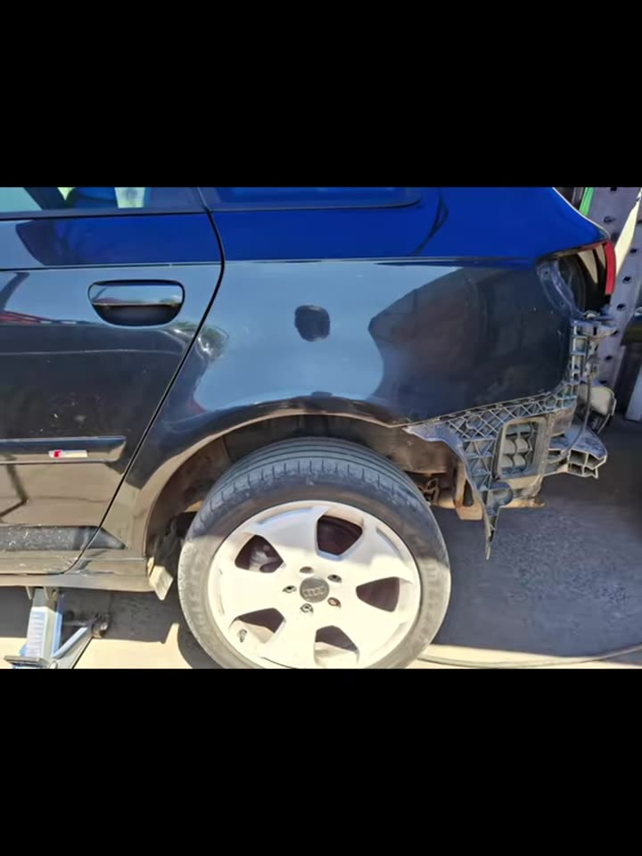
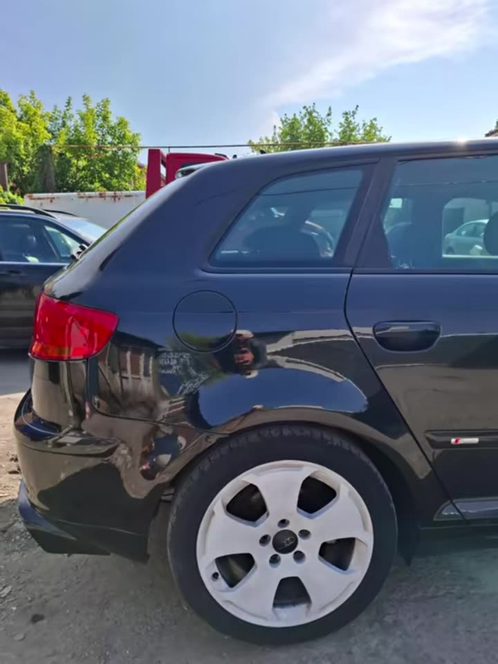
Durchgeführte Arbeiten
- Demontage des Heckstoßfängers
- Instandsetzung des hinteren Seitenteils
- Spachteln, Schleifen, Abkleben und Abdecken
- Lackierung von Seitenteil und Heckstoßfänger
- Montage der Anbauteile
BMW 3er Touring: Unfallfahrzeug
Frontschaden, Karosserie und Lack
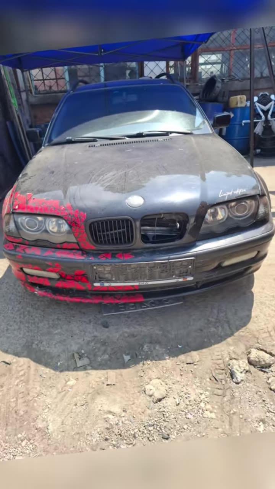
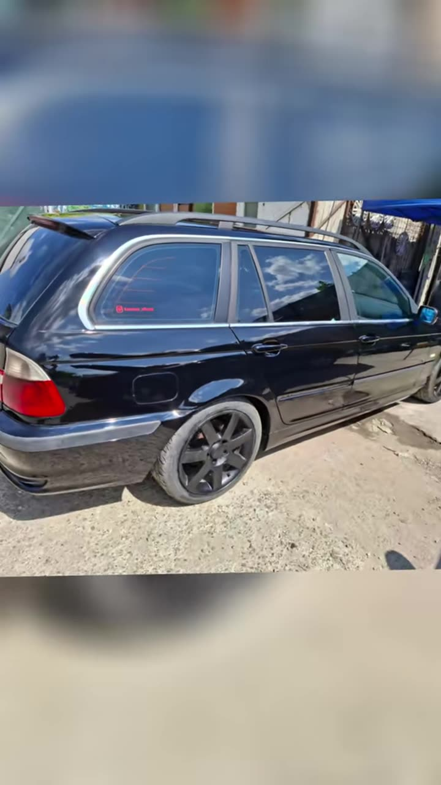
Durchgeführte Arbeiten
- Demontage der beschädigten Teile
- Instandsetzung des Frontbereichs
- Lackiervorbereitung der Karosserie: Schleifen, Spachteln, Grundieren
- Lackierung
- Montage der Anbauteile
VW Tiguan: Frontschaden
Front, Stoßfänger und Motorhaube
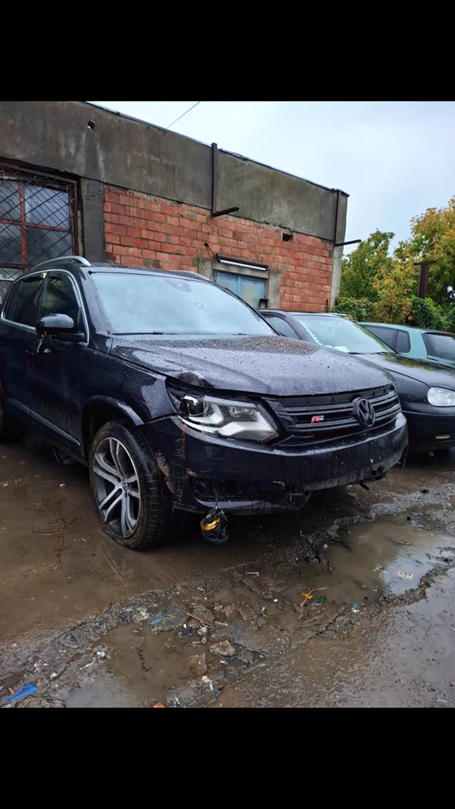
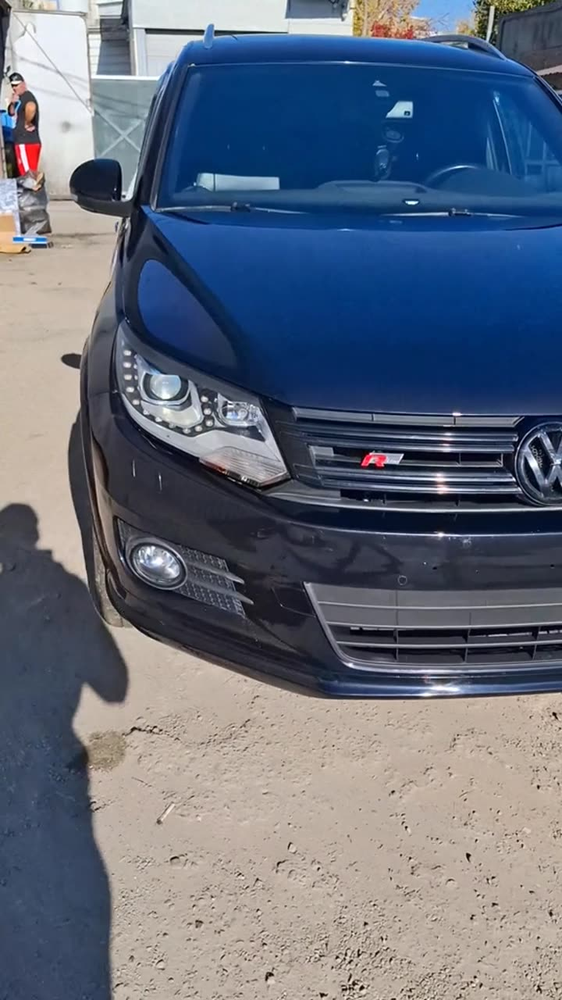
Durchgeführte Arbeiten
- Demontage der Frontteile
- Instandsetzung der beschädigten Teile
- Lackiervorbereitung und Lackierung
- Montage der Frontteile
- Politur
VW Jetta: Seitenteil hinten und Schweller
Rostschaden, im Video bei der Arbeit zu sehen
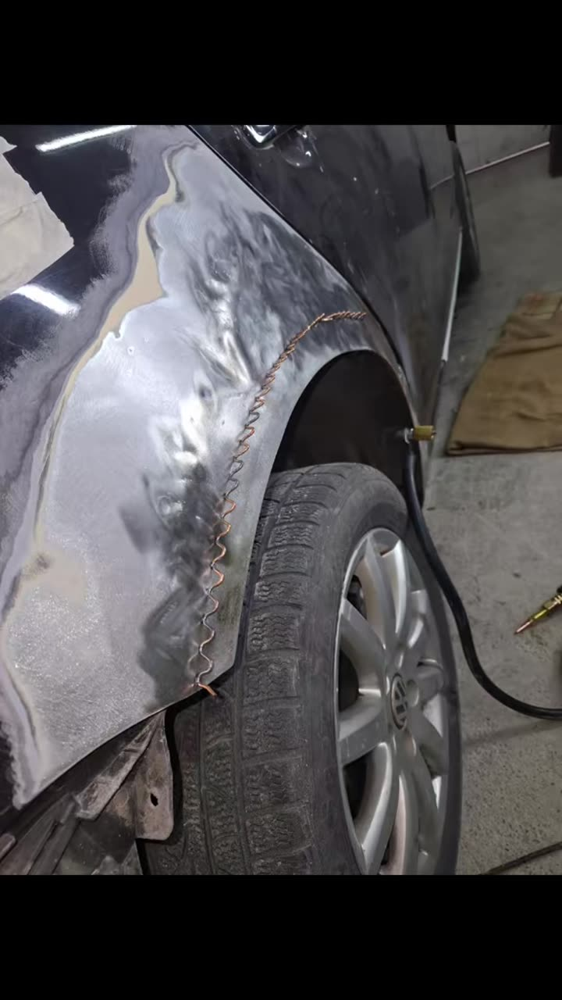
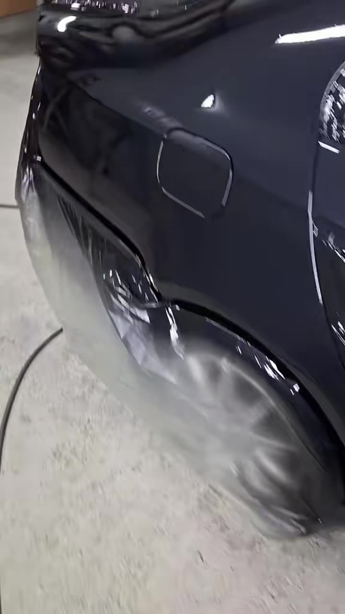
Durchgeführte Arbeiten
- Entfernen von Rost und altem Lack
- Instandsetzung von Seitenteil und Schweller
- Spachteln, Schleifen und Grundieren
- Abkleben und Abdecken
- Lackierung
Chevrolet: Schwellerinstandsetzung
Korrodierter Schweller
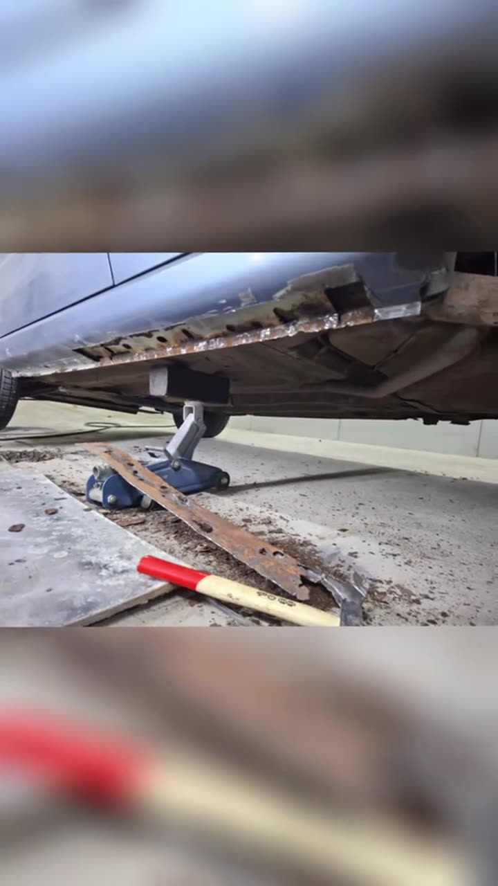
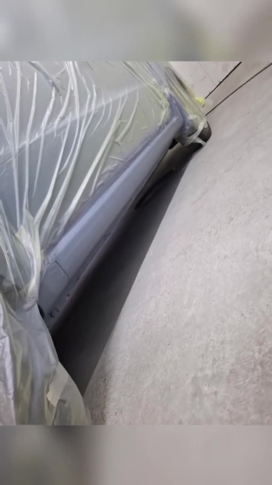
Durchgeführte Arbeiten
- Entfernen der korrodierten Bereiche
- Instandsetzung des Schwellers
- Lackiervorbereitung, Abkleben und Abdecken
- Lackierung
Ford: Tür und Seitenteil hinten
Dellen und Lackschaden
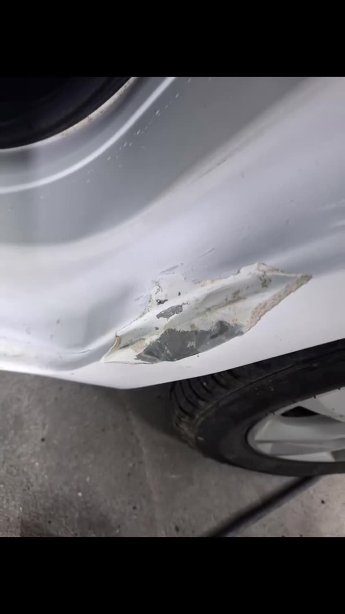
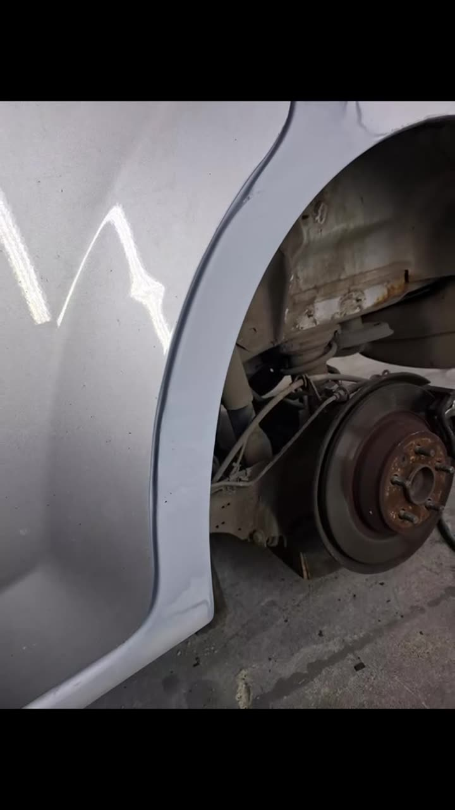
Durchgeführte Arbeiten
- Ausbeulen von Tür und Seitenteil
- Spachteln, Schleifen und Grundieren
- Abkleben und Abdecken
- Lackierung von Tür und Seitenteil
Ford Focus: Heckbereich
Seitenteil hinten und Heckstoßfänger
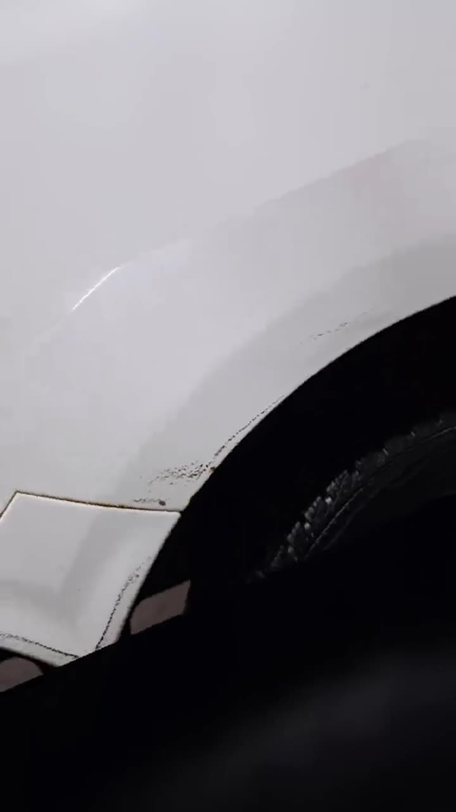
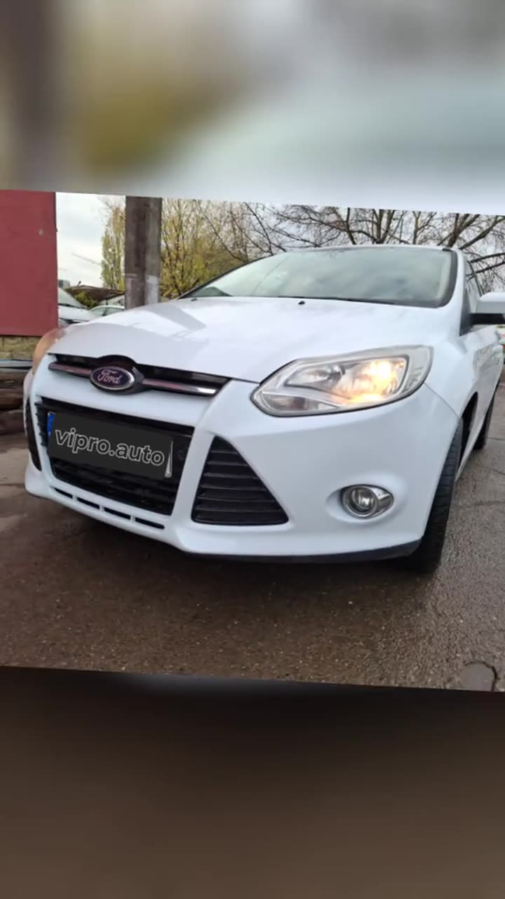
Durchgeführte Arbeiten
- Demontage des Heckstoßfängers
- Instandsetzung des Seitenteils hinten
- Abkleben und Abdecken
- Lackierung von Seitenteil und Stoßfänger
- Montage
Toyota Auris: Frontstoßfänger
Kratzer am Kunststoff-Stoßfänger
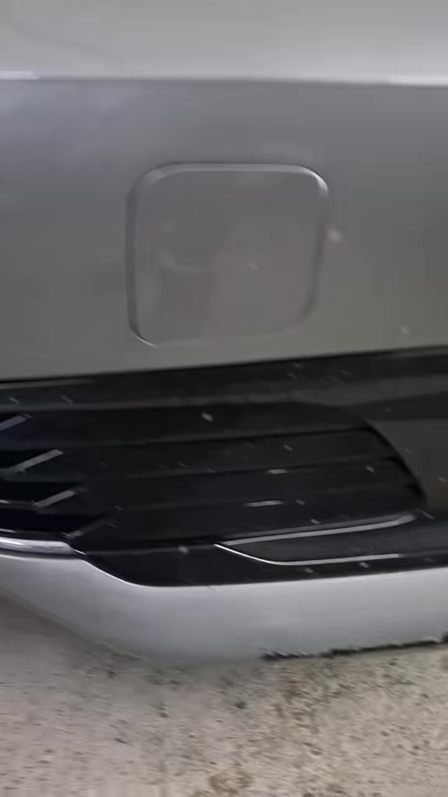
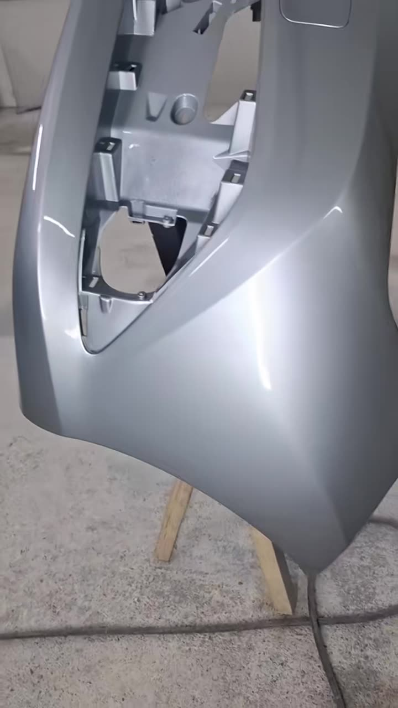
Durchgeführte Arbeiten
- Demontage des Frontstoßfängers
- Schleifen und Lackiervorbereitung
- Lackierung des Stoßfängers